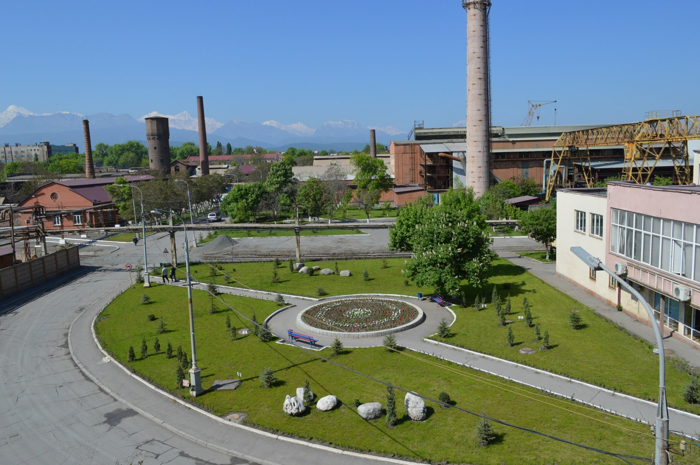

О нас
Электроцинк
ОАО «Электроци́нк» — одно из крупнейших предприятий
цветной металлургии России, расположенное в
Промышленном муниципальном округе Владикавказа,
Северная Осетия, входит в структуру УГМК.

Краткие сведения
- Основана в 1898 году.
- Были построены первые промышленные печи для обжига концентратов.
- Завод производит цинк, кадмий, серную кислоту.
- В 2009 году был огромный выброс оксида серы.